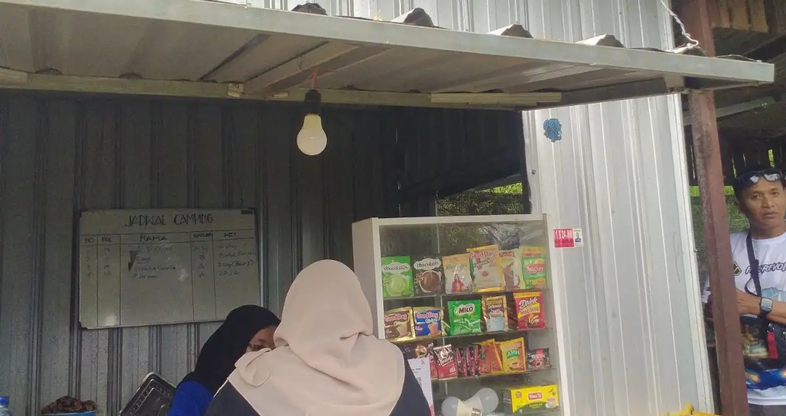
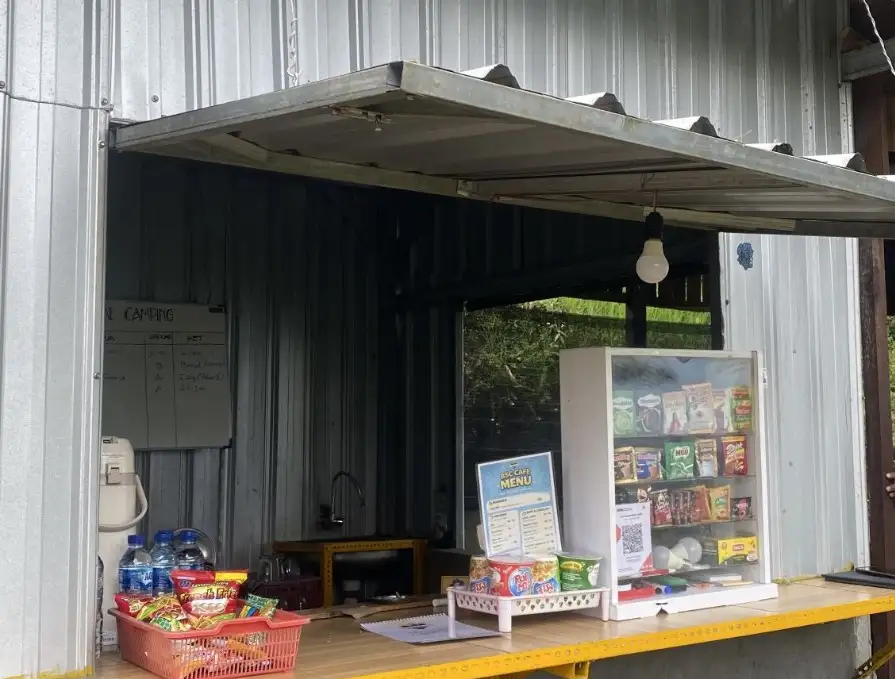

Tuntutan pekerjaan, notifikasi tiada henti, dan bisingnya perkotaan seringkali membuat pikiran kita kusut. Ada masanya liburan biasa tidak cukup untuk mereset pikiran. Itulah mengapa konsep liburan yang memanjakan mata, seperti berada di Citylightscamp, kini menjadi tren karena peranannya sebagai sebuah terapi visual yang sangat efektif.
1. Definisi Ulang "Healing" dengan Alam Terbuka
Banyak yang menyamakan healing dengan sekadar berbelanja atau bersantai di resort mewah. Namun, di Citylightscamp, kita mendefinisikan ulang makna healing. Kembali menyatu dengan alam yang asri, menghirup udara pegunungan yang masih murni di Kota Batu, memberikan stimulasi alami pada otak untuk melambat dan lebih rileks.
2. Psikologi Cahaya Kota di Malam Hari
Melihat city light secara langsung dari kejauhan (dari area tinggi yang lebih sepi) telah lama diyakini memiliki efek menenangkan. Cahaya keemasan yang berkerlip di kejauhan bertindak layaknya ritme alami yang bisa menurunkan hormon stres (kortisol). Mata yang sebelumnya lelah mentap layar monitor berjam-jam mendapatkan peliput lara dengan melihat sejauh mata memandang membelah langit malam.
Ketika kita bisa melihat ribuan masalah orang lain hanya berupa sekecil titik cahaya dari ketinggian, seketika masalah kita turut terasa lebih ringan. Itulah kekuatan terapi visual.
3. Menemukan Keseimbangan Pikiran
Pemandangan malam yang tenang mengajarkan kita tentang prespektif. Berada di lingkungan luas tanpa batas, menjauh dari sekat-sekat tembok perkantoran, membantu membuka wawasan bahwa dunia di luar sana masih sangat indah.

4. Koneksi Tulus Tanpa Distraksi
Bagian akhir dari terapi ini adalah bagaimana pemandangan ini menjadi latar belakang obrolan dari hati ke hati. Tanpa hiruk-pikuk internet yang super cepat (walaupun tetap tersedia dengan baik), kita "dipaksa" bernapas sejenak dan terkoneksi dengan diri sendiri dan orang-orang terkasih yang ikut menemani.
5. FAQ Terapi Visual di Citylightscamp
Apakah lokasi camping terlampau bising di malam hari?
Sama sekali tidak. Lokasi Citylightscamp ada di dataran yang menjauh dari pusat kemacetan, sehingga suasana yang didapat benar-benar sunyi, ideal untuk relaksasi diri.
Bagaimana view di waktu siang harinya?
Di siang hari, mata Anda akan dimanjakan dengan pepohonan hijau hutan cemara atau pinus, panorama pegunungan, serta langit cerah, yang juga membantu penyembuhan mata dari penat radiasi layar gawai/komputer.